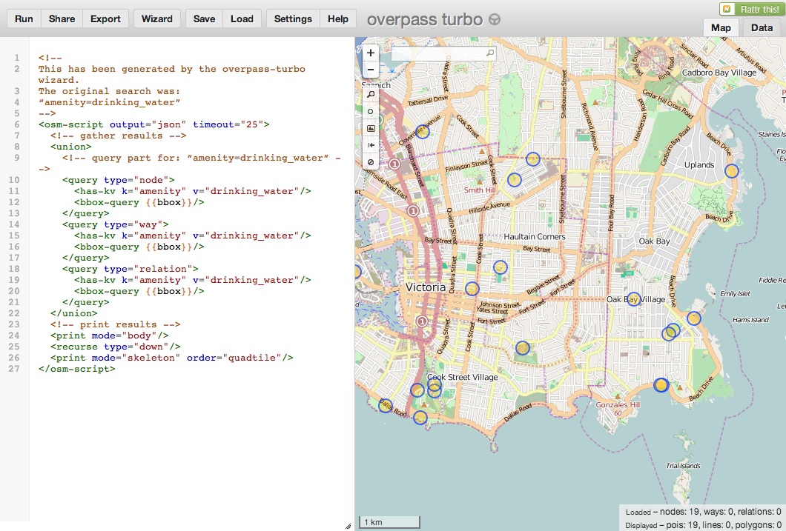
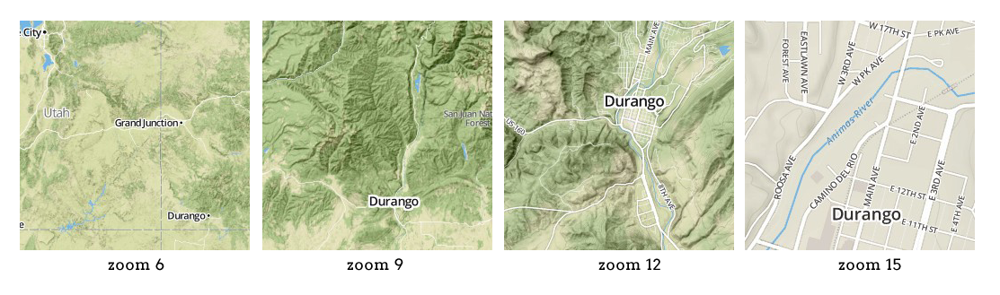

Web Maps
&
OSM
order of events:
- OSM Overpass
- Mapping Libraries (leaflet)
- Make a Map
1. OverpassThe Overpass API is a
read-only API that serves up
custom selected parts of the OSM map data -
src
Query language based on bounding box and OSM Tags
<query type="node">
<has-kv k="KEY" v="VALUE"/>
<bbox-query {{bbox}}/>
</query>
tourism=museum
amenity=bicycle_parking
sport=hockey

Turbo lets you download query results in
geojson format, which can be
consumed by
web mapping libraries.
learn-geojson2. Mapping Libraries
Built to to connect spatial data with tile services and provide specific functions to interact & manipulate geographic information.
Leaflet is a modern
open-source JavaScript library for mobile-friendly interactive maps -
src
built on layers of web elements
div, img, svg
generated from geographic data
geojson, topojson
Leaflet relies on tiles for basemaps.
Tiles are square
image files stitched together, that contain specific data depending on your
scale.

3. Make A Map
Requires some knowledge in HTML & JavaScript, but simplicity is the perspective in which these mapping libraries are built.
three lines of javascript is all it takes
// initialize map
var map = L.map('map').setView([0, 0], 1);
// add tiles
L.tileLayer('YOUR-TILES').addTo(map);
// add geojson data
L.geoJson(geojson).addTo(map);
in the data.js file define your geojson as a javascript variable
var geojson = {
"type": "FeatureCollection",
"features": [
{ ... }
]
}
your data can be loaded in several ways, each useful for different purposes. LD
explains this well in
two blog posts.
bicycles!
1.
overpass w/ a query for bicycle points
2. load into leaflet starter
amenity=bicycle_parking